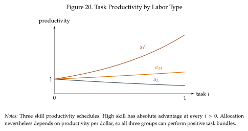
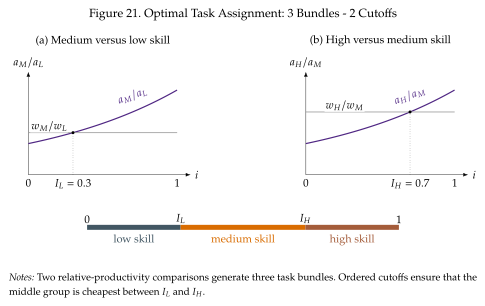

Three inputs: skill assignment, routinization, and polarization¶
The task model has also been used to study how technology can lead to wage inequality and changes in job prospects for different types of workers. To look at this, we extend the model to three inputs: low-, medium-, and high-skill labor. We will use \(L,M,H\) as skill labels. The task aggregator is the same as in our general case, equation (4.1):
Only task production and the number of assignment boundaries change:
The same optimality conditions give \(P(Y/y(i))^{1/\eta}a_s(i)\leq w_s\), with equality when \(n_s(i)>0\). Each task is performed by the type of worker with the highest productivity per dollar, or equivalently the lowest unit cost.
Two relative-productivity curves, two cutoffs¶
The principle of comparative advantage still applies, but we now have to make comparisons between three inputs. We make the problem easier by ordering groups so that low-skill workers have comparative advantage in low-indexed tasks, medium skill workers in tasks in the middle, and high-skill workers in high-indexed tasks. We get to this ordering by ensuring that when we compare medium and low skilled workers, the comparative advantage of medium skill workers is increasing (just as with labor and capital before). Hence, there is a cutoff task above below which we want to use low-skill labor. Similarly, when hen we compare high and medium skilled workers, the comparative advantage of high skill workers is increasing. This gives rise to a second cutoff, above which we want to use high-skill labor. Medium-skill labor is in the middle of the two cutoffs.
Formally, the task productivity schedules are positive and continuous, with increasing relative schedules as follows
It is the ordering of relative productivities that matters. Figure~Figure 11 illustrates this distinction: high-skill workers are more productive at every positive-index task, but their relative advantage is strongest at the right end.

At the boundaries, adjacent groups have equal unit costs:
These crossings satisfy \(0<I_L<I_H<1\) as in Figure~Figure 12. Below \(I_L\) low skill is cheaper than medium skill, which is cheaper than high skill because \(i<I_H\). Between the cutoffs, medium skill beats both neighbors. Above \(I_H\), high skill beats medium skill, which beats low skill.

Equlibrium: Wages and task bundles adjust together¶
With positive fixed supplies, wages must clear all three labor markets:
The assignment sets are \(\mathcal I_L=[0,I_L]\), \(\mathcal I_M=[I_L,I_H]\), and \(\mathcal I_H=[I_H,1]\). The two cutoff conditions and market clearing jointly determine wages and bundles. For Cobb--Douglas task demand, the wage-bill shares simplify to \(I_L\), \(I_H-I_L\), and \(1-I_H\).
Routinization and polarization¶
The three bundles allow us to distinguish nonroutine manual and service activities, routine production and clerical activities, and nonroutine abstract activities. This interpretation is extremely useful to think about how different occupations have been affected by technological change in the 2000s.
We can think of non-routine manual and service tasks as being most similar to the tasks in low-paying occupations in retail and services. The fact that these tasks are non-routine makes them hard to automate, think of tasks that require interacting with customers of performing personal services. In the middle we have the traditionally well-paid occupations in manufacturing and some clerical activities, like accounting. These occupations have traditionally commanded a higher wage than the non-routine occupations in the first group, but the fact that their activities are easily codifiable which makes them easy to automate. At the top we have occupations heavy on non-routine abstract tasks. These have traditionally been hard to automate (but likely not for much longer).
The routinization hypothesis, chiefly associated with Autor et al. (2003), emphasizes that computers can replace codifiable routine tasks while being less effective at many nonroutine manual tasks and complementing abstract work. To represent automation of routine tasks, restore capital as an additional option alongside the three labor groups:
The set of automated tasks is the set of tasks assigned to capital:
If machines are particularly cost effective at routine activities, \(\mathcal A\) can lie inside the middle bundle. If machines get better or cheaper they replace more of these tasks and lower the middle group's expenditure share and labor demand. The demand for the remaining tasks and equilibrium wages also adjust.
This mechanism helps explain job polarization: declining employment shares in routine middle-wage occupations alongside rising shares at the low- and high-wage ends, documented by Autor et al. (2006); Autor et al. (2008); Autor and Dorn (2013) develop the connection to low-skill service employment.